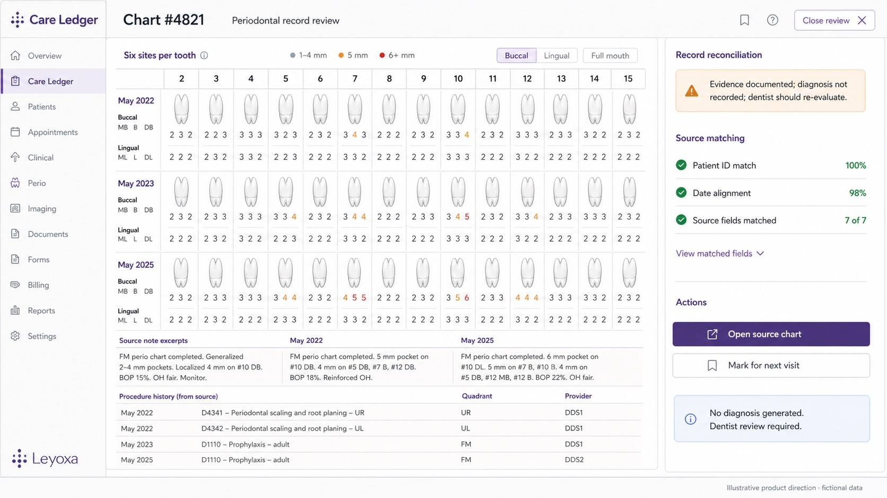
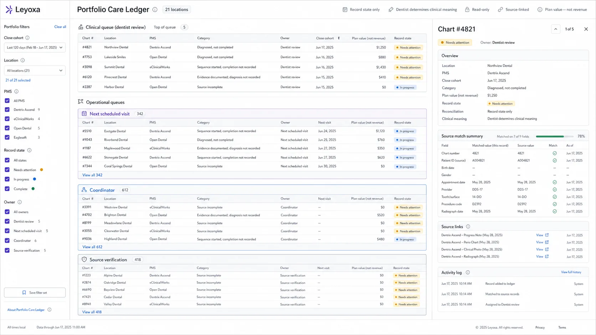

Evidence documented. Diagnosis not recorded.
Measurements or other recorded evidence appear longitudinally without a corresponding diagnosis entry.
One acquisition reconciliation category · Not a diagnostic claim
The Care Ledger can reconcile longitudinal charting, narrative, procedures, treatment plans, and time across an acquired cohort. It returns record states for dentist review without asserting disease or recommending treatment.
The intended detail view keeps the recognizable periodontal grid, the note excerpts, procedure history, and every field used to match the record. It replaces vague confidence with measured source alignment.

The detail view remains linked to its location, PMS, chart, note dates, matching fields, and source records. A dentist reviews the clinical slice; incomplete source records remain held.

Periodontitis is common in the United States, but population prevalence cannot diagnose an individual patient or establish a gap inside any specific practice.
A nationally representative NHANES 2009–2014 study estimated periodontitis among dentate adults aged 30 or older.
The same surveillance study estimated the severe category using CDC/AAP case definitions.
Leyoxa evaluates only the approved source records and returns them for dentist review.
Sources: Eke et al., JADA 2018 ↗︎ and CDC gum-disease facts ↗︎. These are population estimates from 2009–2014 data, not current practice-level findings.
The product compares record states. Only the reviewing dentist determines their clinical meaning.
Measurements or other recorded evidence appear longitudinally without a corresponding diagnosis entry.
The diagnosis or plan exists, but the procedure history does not show the expected documented start.
Part of a documented multi-step sequence appears, while the remaining sequence has no completion record.
Probing depths, notes, and procedure codes require clinical interpretation and current examination. Leyoxa does not convert them into a diagnosis.
What every flagged item saysEvidence documented; diagnosis not recorded; dentist should re-evaluate.
Only the approved date range and record types are read.
Every displayed fact links back to the record behind it.
The practice records any clinical conclusion in its own PMS.
Count records reviewed, items returned, source-link coverage, review dispositions, aging, and the estimated value of existing recorded plans. Do not count generated diagnoses—there are none.